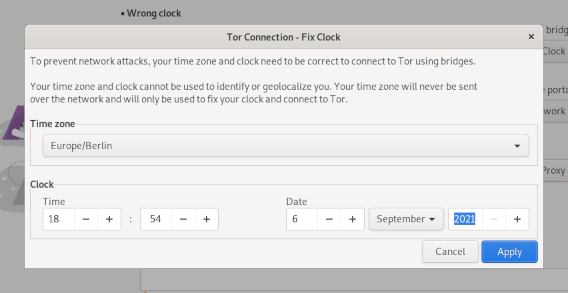
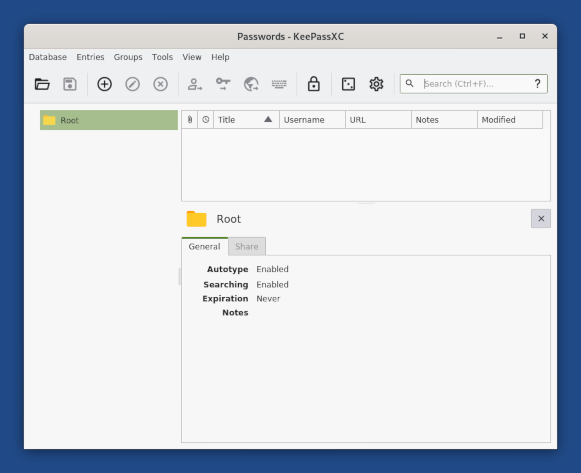

-
Subscribe to the amnesia-news mailing list to receive the same news by email:
-
Follow us on Twitter @Tails_live.
In Tails 4.22, we focused on solving the most important issues in the Tor Connection assistant to make it more robust and easier to use.
Changes and updates
Included software and hardware support
Update Tor Browser to 10.5.6.
Update Thunderbird to 78.13.
Update the AMD graphics firmware to 20210818. This should improve the support for some AMD graphics cards.
Tor Connection
Change the custom bridge interface to only allow entering 1 bridge. (#18550)
People had troubles knowing how to enter their custom bridges when the widget was a textarea and only the first bridge is used anyway.

Allow saving 1 custom bridge in the Persistent Storage. (#5461)

Allow fixing the clock manually when connecting to Tor using bridges fails. (#15548)
This helps people East from London connect to Tor using obfs4 bridges and makes connecting to Tor more robust in general.

Reduce the timeout that determines whether we can connect to Tor at all from 30 seconds to 10 seconds. Increase the timeout to start Tor entirely from 120 seconds to 600 seconds. (#18501).
Tor Connection now fails quicker when it's impossible to connect to Tor, while being more robust on slow Internet connections.
Allow trying again to connect to Tor from the error screen. (#18539)
Unsafe Browser
Stop restarting Tor when exiting the Unsafe Browser. (#18562)
Only mention the Persistent Storage in the Unsafe Browser warning when there is already a Persistent Storage. (#18551)
Others
Make sure that automatic upgrades are downloaded from a working mirror. (#15755)
Add Russian to the offline documentation included in Tails.
Fixed problems
Tor Connection
Fix connecting to Tor using the default bridges. (#18462)
Fix connecting to Tor when the Wi-Fi settings are saved in the Persistent Storage. (#18532)
Stop trying to connect to Tor in the background when Tor Connection reaches the error screen. (#18740)
For more details, read our changelog.
Known issues
None specific to this release.
See the list of long-standing issues.
Get Tails 4.22
To upgrade your Tails USB stick and keep your persistent storage
Automatic upgrades are broken from Tails 4.14 and earlier.
Follow our instructions to do an automatic upgrade from Tails 4.15, Tails 4.16, Tails 4.17, or Tails 4.18.
Automatic upgrades are available from Tails 4.19 or later to 4.22.
You can reduce the size of the download of future automatic upgrades by doing a manual upgrade to the latest version.
If you cannot do an automatic upgrade or if Tails fails to start after an automatic upgrade, please try to do a manual upgrade.
To install Tails on a new USB stick
Follow our installation instructions:
The Persistent Storage on the USB stick will be lost if you install instead of upgrading.
To download only
If you don't need installation or upgrade instructions, you can download Tails 4.22 directly:
What's coming up?
Tails 4.23 is scheduled for October 5.
Have a look at our roadmap to see where we are heading to.
Releases
In august, we released 4.22~rc1 and 4.22. Having a release candidate helped us gather feedback from users to build a more solid 4.22. Enjoy it!
Tails 4.23 is scheduled for October 5.
Highlights of the month
We migrated our XMPP chat rooms to
disroot.org. You do not need to have a disroot.org account to join us on the talk chat, any XMPP account is fine. XMPP chat room is only used for users' mutual help, and is not always monitored by our help desk. Write an email if you want to talk with Tails' help desk.The Foundations Team met for a sprint, which resulted in many bugs being fixed and features being added. You can taste some of them in 4.22, but some of them haven't make it for the current release:
Our joint proposal with Tor to DRL has been accepted. This will help us do more user research and implement UX improvements.
We added Word Solver as a sponsor.
We are improving the speed of our Continous Integration infrastructure. This is not immediately visible to users, but helps making Tails' development more enjoyable and sustainable.
Metrics
- Tails has been started more than 675,177 times this month. This makes 22,505 boots a day on average.
Contribute to Tails by testing our release candidate for Tails 4.22 by the end of August!
What's new in 4.22~rc1?
Tails 4.22, scheduled for release on September 7, will allow users to manually set their correct time zone and clock. This helps users to work around a long-standing issue of Tails not being able to connect to Tor when obfs4 bridges are being used and the computer has a hardware clock that is set to a time zone that is east of UTC. See #15548.
Also, Tails 4.22 will allow users to save bridges to Persistent Storage so that the bridges do not need to be reentered every time Tails is restarted.
What's new since 4.21?
Update Thunderbird to 78.13
Tor Connection assistant will stop trying to connect to Tor when the error screen is displayed.
Offline documentation includes the Russian language translation.
For more details, read our changelog.
Get Tails 4.22~rc1
To upgrade your Tails USB stick and keep your persistent storage
If you are running Tails 4.19 or later, you can upgrade like this:
Start Tails and set an administration password.
Connect to the network and make sure Tor is connected successfully.
Run this command in a Terminal:
echo TAILS_CHANNEL=\"alpha\" | sudo tee -a /etc/os-release && \ tails-upgrade-frontend-wrapperEnter the administration password when asked for the "password for amnesia".
After the upgrade is applied, restart Tails and choose Applications ▸ Tails ▸ About Tails to verify that you are running Tails 4.22~rc1.
Download Tails 4.22~rc1
Download and install Tails 4.22~rc1 as usually.
All the data on this USB stick will be lost. Don't install Tails 4.22~rc1 on any USB stick that already has a Persistent Storage, upgrade instead.
Direct download
For USB sticks (USB image)
OpenPGP signature
SHA256SUM: 52930e1241809c0939754968e9d6925de4306a1dd3b727d5a2f0b33f5442859fFor DVDs and virtual machines (ISO image)
OpenPGP signature
SHA256SUM: 6e37811b753f480d709d7c88464ae1b2d7282470876e25513a49b987adafa87e
BitTorrent download
What to test in Tails 4.22~rc1?
We particularly would like to know if Tails successfully connects to Tor using bridges when the correct time zone and clock are set from within Tor Connection assistant.
Also, we want to make sure that bridges are properly saved to and restored from Persistent Storage when the Tor Bridges feature is enabled.
Tell us if anything is unclear, confusing, or not working as you would expect.
Please, send your feedback to tails-testers@boum.org (public mailing list).
Known issues in 4.22~rc1
None specific to this release.
Happy testing!
Changes and updates
Fixed problems
- Prevent Tails Installer from deleting a Persistent Storage when doing a manual upgrade and choosing Cancel in the confirmation dialog. (#18494)
For more details, read our changelog.
Known issues
None specific to this release.
See the list of long-standing issues.
Get Tails 4.21
To upgrade your Tails USB stick and keep your persistent storage
Automatic upgrades are available from Tails 4.19 or later to 4.21.
If you cannot do an automatic upgrade or if Tails fails to start after an automatic upgrade, please try to do a manual upgrade.
To install Tails on a new USB stick
Follow our installation instructions:
The Persistent Storage on the USB stick will be lost if you install instead of upgrading.
To download only
If you don't need installation or upgrade instructions, you can download Tails 4.21 directly:
What's coming up?
Tails 4.22 is scheduled for September 7.
Have a look at our roadmap to see where we are heading to.
Tor Connection assistant
Tails 4.20 completely changes how to connect to the Tor network from Tails.
After connecting to a local network, a Tor Connection assistant helps you connect to the Tor network.

This new assistant is most useful for users who are at high risk of physical surveillance, under heavy network censorship, or on a poor Internet connection:
It protects better the users who need to go unnoticed if using Tor could look suspicious to someone who monitors their Internet connection (parental control, abusive partner, school or work network, etc.).
It allows people who need to connect to Tor using bridges to configure them without having to change the default configuration in the Welcome Screen.
It helps first-time users understand how to connect to a local Wi-Fi network.
It provides feedback while connecting to Tor and helps troubleshoot network problems.
We know that this assistant is still far from being perfect, even if we have been working on this assistant since February. If anything is unclear, confusing, or not working as you would expect, please send your feedback to tails-dev@boum.org (public mailing list).
This first release of the Tor Connection assistant is only a first step. We will add more improvements to it in the coming months to:
Save Tor bridges to the Persistent Storage (#5461)
Help detect when Wi-Fi is not working (#14534)
Detect if you have to sign in to the local network using a captive portal (#5785)
Synchronize the clock to make it easier to use Tor bridges in Asia (#15548)
Make it easier to learn about new Tor bridges (#18219, #15331)
Changes and updates
Update OnionShare from 1.3.2 to 2.2.
This major update adds a feature to host a website accessible from a Tor onion service.

Update KeePassXC from 2.5.4 to 2.6.2.
This major update comes with a redesign of the interface.

Update Tor Browser to 10.5.2.
Update Thunderbird to 78.11.0.
Update Tor to 0.4.5.9.
Update the Linux kernel to 5.10.46. This should improve the support for newer hardware (graphics, Wi-Fi, and so on).
Rename MAC address spoofing as MAC address anonymization in the Welcome Screen.
Fixed problems
Automatic upgrades
Made the download of upgrades and the handling of errors more robust. (#18162)
Display an error message when failing to check for available upgrades. (#18238)
Tails Installer
Made the display of the Reinstall button more robust. (#18300)
Make the Install and Upgrade unavailable after a USB stick is removed. (#18346)
For more details, read our changelog.
Known issues
Automatic upgrades are broken from Tails 4.14 and earlier.
To upgrade from Tails 4.14 or earlier, you can either:
Do a manual upgrade.
Fix the automatic upgrade from a terminal. To do so:
Start Tails and set up an administration password.
In a terminal, execute the following command:
torsocks curl --silent https://tails.boum.org/isrg-root-x1-cross-signed.pem \ | sudo tee --append /usr/local/etc/ssl/certs/tails.boum.org-CA.pem \ && systemctl --user restart tails-upgrade-frontendThis command is a single command that wraps across several lines. Copy and paste the entire block at once and make sure that it executes as a single command.
Approximately 30 seconds later, you should be prompted to upgrade to the latest version of Tails. If no prompt appears, you might already be running the latest version of Tails.
See the list of long-standing issues.
Get Tails 4.20
To upgrade your Tails USB stick and keep your persistent storage
Automatic upgrades are broken from Tails 4.14 and earlier. See the known issue above.
Automatic upgrades are available from Tails 4.14 or later to 4.20.
You can reduce the size of the download of future automatic upgrades by doing a manual upgrade to the latest version.
If you cannot do an automatic upgrade or if Tails fails to start after an automatic upgrade, please try to do a manual upgrade.
To install Tails on a new USB stick
Follow our installation instructions:
The Persistent Storage on the USB stick will be lost if you install instead of upgrading.
To download only
If you don't need installation or upgrade instructions, you can download Tails 4.20 directly:
What's coming up?
Tails 4.21 is scheduled for August 10.
Have a look at our roadmap to see where we are heading to.
Highlights
We entirely rewrote and redesigned our very old warnings page.
The new warnings page is shorter, easier to understand by less technical people, less scary, more helpful, and visually attractive. We also integrated it in our download page so that people can learn more about tails while waiting for their download.
Read our articles on:
We finished making Tails ready for the deprecation of onion services v2 by upgrading to OnionShare 2.2.
We explained that users can reduce the size of the download of future automatic upgrades by doing a manual upgrade to the latest version.

We published our finances for 2020.
We documented better MAT and metadata.
We documented how to use Dino in Tails.
Dino is being considered as an option to replace Pidgin in Tails.
Please report your findings!
Metrics
- Tails has been started more than 629 659 times this month. This makes 20 989 boots a day on average.
Contribute to Tails by testing our release candidate for Tails 4.20!
We are very excited about it and cannot wait to hear your feedback :)
What's new in 4.20~rc1?
Tails 4.20, scheduled for July 13, will completely change how to connect to the Tor network from Tails. We would like as many people as possible to test this release candidate to be able to fix as many problems as possible before we release 4.20 to all users.

Over the years, we have identified many issues in how to connect to the Tor network from Tails, thanks to your feedback. With this release candidate, we are trying to solve the most important and pressing of these issues:
The lack of feeback while connecting to the Tor network.
The option to use Tor bridges has to be turned on in the Welcome Screen and cannot be changed afterwards.
The lack of default Tor bridges.
The previous configuration screen for Tor bridges wasn't accessible to people who use the screen reader.
The lack of guidance when Tails is not connected to a local network yet.
What's new since 4.19~rc1?
The Tor Connection experience has had several improvements and bugfixes since 4.19~rc1.
OnionShare was upgraded to 2.2, which features significant changes compared to version 1.3.2 that we used to ship.
For more details, read our changelog.
Get Tails 4.20~rc1
To upgrade your Tails USB stick and keep your persistent storage
If you are running Tails 4.2 or later, you can upgrade like this:
Start Tails and set an administration password.
Connect to the network and make sure Tor is connected successfully.
If you are running Tails 4.19~rc1 you must run this command in a Terminal or you will experience issues:
torsocks curl --silent https://tails.boum.org/isrg-root-x1-cross-signed.pem \ | sudo tee --append /usr/local/etc/ssl/certs/tails.boum.org-CA.pemEnter the administration password when asked for the "password for amnesia".
Run this command in a Terminal:
echo TAILS_CHANNEL=\"alpha\" | sudo tee -a /etc/os-release && \ tails-upgrade-frontend-wrapperEnter the administration password when asked for the "password for amnesia".
After the upgrade is applied, restart Tails and choose Applications ▸ Tails ▸ About Tails to verify that you are running Tails 4.20~rc1.
Download Tails 4.20~rc1
Download and install Tails 4.20~rc1 as usually.
All the data on this USB stick will be lost. Don't install Tails 4.20~rc1 on any USB stick that already has a Persistent Storage, upgrade instead.
Direct download
For USB sticks (USB image)
OpenPGP signature
SHA256SUM: 7b37ad1cb5cf8e8184676b1ac3d3a66e58dbfa70bf4c13f32f769df304eddd71For DVDs and virtual machines (ISO image)
OpenPGP signature
SHA256SUM: bc4cc51e7e0bc570ccf716aa06f151ca432ba8e78d25861d89b6d5d338aebcdc
BitTorrent download
What to test in Tails 4.20~rc1?
We think Tails 4.20~rc1 is in pretty good shape, but it still has a few rough edges. We need your help to identify as many new problems as possible!
We are particularly interested in any issues you experience with time syncing, especially when reported using WhisperBack. Also, we really appreciate testing of diverse and rare network configurations:
When connecting to Tor without bridges fails.
When Tails is not connected to a local network yet.
When disconnecting from a Wi-Fi network with Internet connectivity and then reconnecting to a different Wi-Fi network without Internet connectivity.
When disconnecting from Wi-Fi network that don't require Tor bridges and the reconnecting to different Wi-Fi network that requires Tor bridges.
When connecting to a Tor bridge that works at first but then stops working.
When connecting to the Internet using a proxy.
Tell us if anything is unclear, confusing, or not working as you would expect.
Please, send your feedback to tails-testers@boum.org (public mailing list).
If you are comfortable with the command line, check our hacking tips. They contain firewall rules that can be used to block access to the Tor network without bridges or simulate a broken bridge.
Known issues in 4.20~rc1
- Korean and Polish localization is not available. We will attempt to fix this in the final Tailss 4.20 release.
What's coming next?
Tails 4.20 will be the first release of a series of improvements to connect to Tor. Next, we will work on:
- Saving Tor bridges to the Persistent Storage (#5461)
- Detecting better when the computer has no supported Wi-Fi hardware (#14534)
- Detecting captive portals (#5785)
- Helping people fixing their clock when failing to connect to
obfs4bridges (#15548)
The learn more about our plans, read our blueprint on network connection.
Happy testing!
Highlights of the month
Improving the experience of connecting to Tor
In May, the coders' main focus were on improving the experience of connecting to Tor in Tails, which we first showed off in Tails 4.19~beta1 and later with some improvements in Tails 4.19~rc1. We had initially planned to include this new work in 4.19 but we decided at the last minute to postpone it: we did not feel confident enough that the whole thing was robust enough to unleash it onto our users. Our current plan is to have this work released in Tails 4.20 on July 13.
One aspect of this work that may be interesting for some of you is that we defined for guidelines for non-user-initiated non-Tor Internet activity in Tails. We haven't implemented any such activity yet, but we plan to do so in the next few months, in particular to detect captive portals and test bridge reachability. If you're curious, have a look at the changes yourself!
Prevent future automatic upgrade issues
We grew tired of breaking automatic upgrades every few months due to changes in how Let's Encrypt certificates are signed, which we clearly are not managing to predict, and adjust to, before it harms our users. So for now, we disabled CA pinning for Tails Upgrader.
Translations
All the website
- de: 26% (1844) strings translated, 14% strings fuzzy
- es: 52% (3689) strings translated, 4% strings fuzzy
- fa: 19% (1374) strings translated, 12% strings fuzzy
- fr: 91% (6429) strings translated, 1% strings fuzzy
- it: 34% (2428) strings translated, 7% strings fuzzy
- pt: 18% (1273) strings translated, 9% strings fuzzy
Core pages of the website
- de: 44% (930) strings translated, 23% strings fuzzy
- es: 89% (1895) strings translated, 4% strings fuzzy
- fa: 19% (416) strings translated, 15% strings fuzzy
- fr: 99% (2092) strings translated, 0% strings fuzzy
- it: 67% (1422) strings translated, 15% strings fuzzy
- pt: 39% (821) strings translated, 14% strings fuzzy
Core pages of the website for languages not activated on the website yet
- ar: 6% (129) strings translated, 7% strings fuzzy
- ca: 6% (131) strings translated, 7% strings fuzzy
- id: 4% (102) strings translated, 4% strings fuzzy
- pl: 6% (140) strings translated, 6% strings fuzzy
- ru: 33% (692) strings translated, 4% strings fuzzy
- sr_Latn: 3% (72) strings translated, 3% strings fuzzy
- tr: 6% (145) strings translated, 6% strings fuzzy
- zh: 9% (204) strings translated, 7% strings fuzzy
- zh_TW: 20% (432) strings translated, 13% strings fuzzy
Metrics
Tails has been started more than 637205 times this month. This makes 20555 boots a day on average.
Our services will be down for maintenance on Tuesday June 8th between 12:00 and 15:00 UTC. We'll be changing the IP address of our main server. We expect the actual switch to be quick. However, it might take some time for everything to be back up and running while the changes to our DNS records propagate.
During that period, our website will be offline and Tails upgrades will not work.
Sorry for the inconvenience!
We worked very hard last week to get ready to release the work on the connection to Tor that we have been showing you in 4.19~beta1 and 4.19~rc1. We made a lot of progress but didn't feel confident enough to release it today.
So, we are releasing 4.19 as a regular upgrade and will release this work in 4.20. We will publish an updated rc2 in the coming days with even more improvements on the connection to Tor.
Changes and updates
Stop pinning the TLS certificate of our website when doing automatic upgrades.
We broke automatic upgrades twice recently; once in December in 4.14 and again during a few days on May 15. These 2 times, it was the consequence of a security feature: the pinning of the TLS certificate of our website when doing automatic upgrades.
We removed this feature because the recent problems proved us that this feature was not worth it if it makes us break automatic upgrades that often. (#18324)
Our upgrades are still as strongly authenticated as they are signed using OpenPGP by our team.
Add visual feedback when typing an administration password with sudo in a terminal:
amnesia@amnesia:~$ sudo -i [sudo] password for amnesia: ********Update Tor Browser to 10.0.17.
Update Thunderbird to 78.10.0.
For more details, read our changelog.
Known issues
None specific to this release.
See the list of long-standing issues.
Get Tails 4.19
To upgrade your Tails USB stick and keep your persistent storage
Automatic upgrades are broken from Tails 4.14 and earlier. See the known issue above.
Automatic upgrades are available from Tails 4.14 or later to 4.19.
If you cannot do an automatic upgrade or if Tails fails to start after an automatic upgrade, please try to do a manual upgrade.
To install Tails on a new USB stick
Follow our installation instructions:
The Persistent Storage on the USB stick will be lost if you install instead of upgrading.
To download only
If you don't need installation or upgrade instructions, you can download Tails 4.19 directly:
What's coming up?
Tails 4.20 is scheduled for July 13.
Have a look at our roadmap to see where we are heading to.